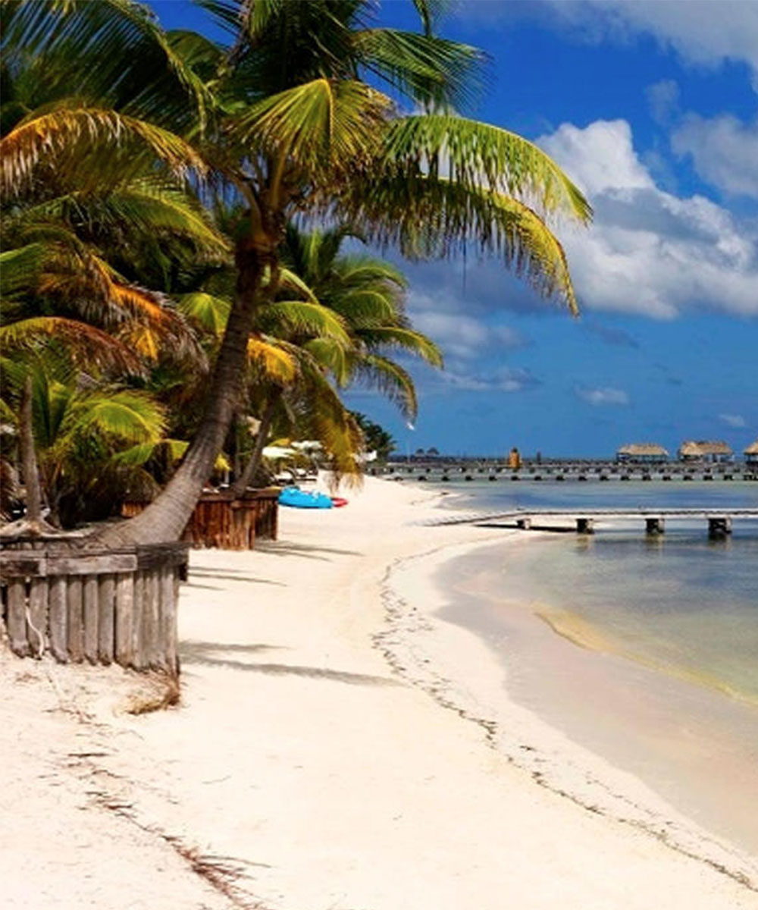
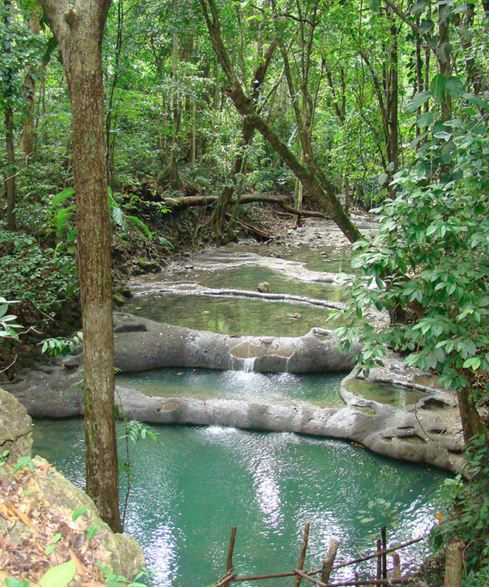
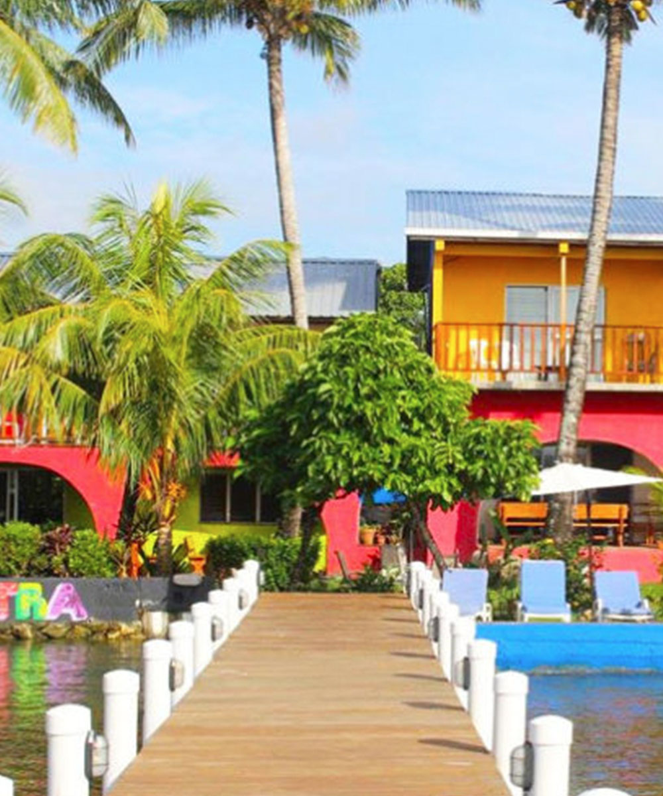
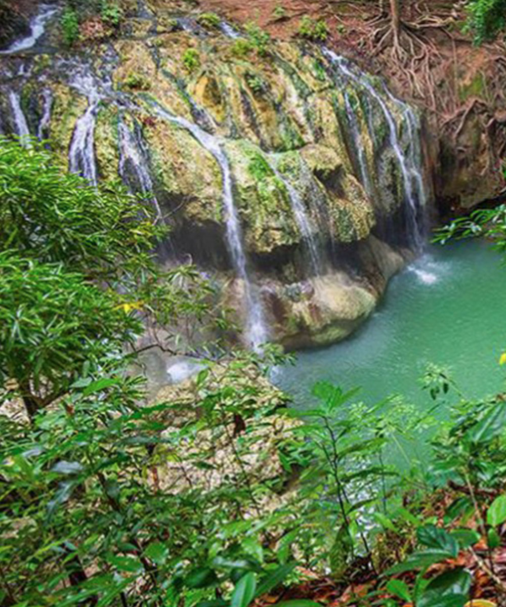
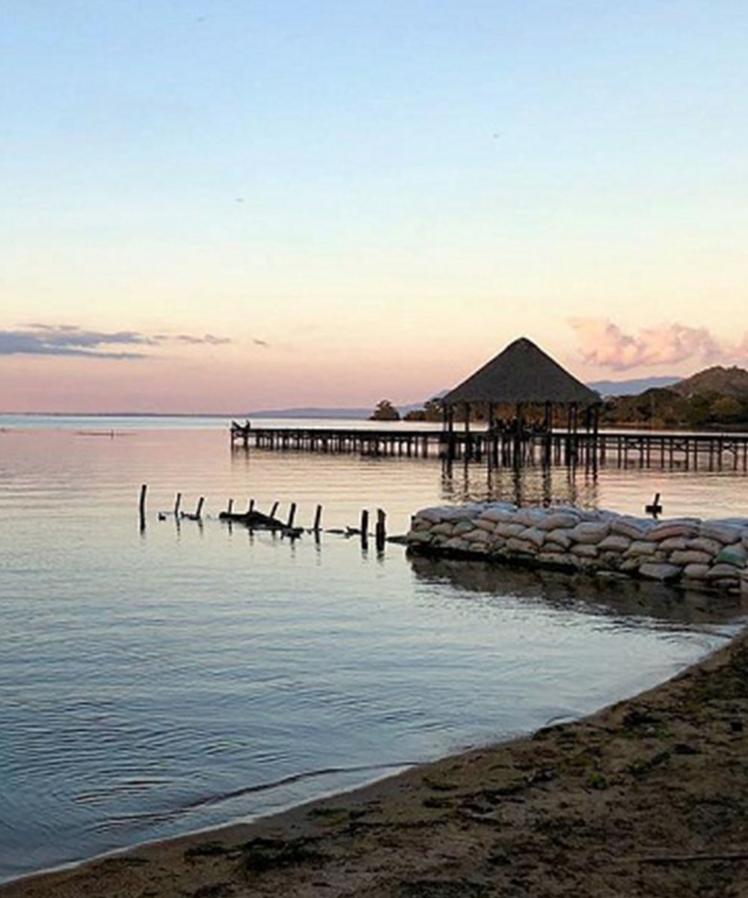

Al hospedarte en Catamaran Island Hotel and Marina, no sólo disfrutarás de nuestras
instalaciones y servicio incomparable, si no que además podrás conocer los mejores destinos
turísticos del área, gracias a nuestra ubicación privilegiada. Nuestro departamento de
reservaciones te puede ayudar a coordinar excursiones a cualquiera de los siguientes lugares
turísticos.

Es una playa de arena blanca ubicada en el Mar Caribe guatemalteco. Es una de
las mejores playas que pueden encontrar en Guatemala, rodeada de naturaleza,
palmeras y aguas cristalinas.
Se puede acampar y no encontrará ningún tipo de construcción. Es un pequeño paraíso para disfrutar del sol, del agua o simplemente relajarse bajo una palmera.
Se puede acampar y no encontrará ningún tipo de construcción. Es un pequeño paraíso para disfrutar del sol, del agua o simplemente relajarse bajo una palmera.

Su nombre, Siete Altares, proviene de siete pozas de aguas limpias y tranquilas
que conforman este lugar. Hay más pozas, pero siete se distinguen por su tamaño
y belleza. Es un área protegida que cuenta con una gran variedad de riqueza
natural propia de la región.
Se pueden observar cangrejos, mariposas, peces y vida silvestre exótica en su hábitat natural. La caza está totalmente prohibida. Para llegar, basta con tomar una lancha desde Livingston y en unos cuántos minutos llegar a este paradisíaco lugar.
Se pueden observar cangrejos, mariposas, peces y vida silvestre exótica en su hábitat natural. La caza está totalmente prohibida. Para llegar, basta con tomar una lancha desde Livingston y en unos cuántos minutos llegar a este paradisíaco lugar.

Es un municipio guatemalteco del departamento de Izabal, situado a 15
kilómetros en lancha de Puerto Barrios. Livingston está poblado principalmente
por habitantes de la etnia garífuna, que se situaron a mediados del siglo
XVIII, y es uno de los principales atractivos turísticos del país. Su
gastronomía es única y sus principales platillos son el “Rice and Beans”, el
tapado y el famoso pan de coco.
Combina playas caribeñas de aguas cristalinas, palmeras, vegetación exuberante, arena blanca, selva, el espléndido cañón de Río Dulce y una rica fauna en la cual abundan una gran variedad de aves marinas y otros pájaros tropicales.
Combina playas caribeñas de aguas cristalinas, palmeras, vegetación exuberante, arena blanca, selva, el espléndido cañón de Río Dulce y una rica fauna en la cual abundan una gran variedad de aves marinas y otros pájaros tropicales.

Finca Paraíso se encuentra ubicada a las orillas del lago de Izabal, en el
municipio de El Estor, cuyo mayor atractivo es una gran cascada de agua
caliente, la cual constituye uno de esos fenómenos que pocas veces la
naturaleza nos regala, ya que inclusive, en horas de la mañana, se puede
observar el humeante vapor de agua que despide.
En contraste, a los pies de la cascada, se encuentran las frías aguas del Río San Antonio, cuya mezcla de estas hace de la finca un lugar único.
En contraste, a los pies de la cascada, se encuentran las frías aguas del Río San Antonio, cuya mezcla de estas hace de la finca un lugar único.

Es una fortaleza ubicada en la embocadura del Río Dulce y el Lago de Izabal en
el oriente de Guatemala.
Fue construido en el siglo XVII para proteger las propiedades coloniales contra los ataques de piratas.
El Castillo de San Felipe fue expuesto a repetidos ataques de piratas hasta el siglo XVIII, defendiendo un alto tráfico marítimo.
También fue utilizado durante un largo tiempo como prisión. Ahora pasó a ser una de las atracciones turísticas más visitadas en Río Dulce.
Fue construido en el siglo XVII para proteger las propiedades coloniales contra los ataques de piratas.
El Castillo de San Felipe fue expuesto a repetidos ataques de piratas hasta el siglo XVIII, defendiendo un alto tráfico marítimo.
También fue utilizado durante un largo tiempo como prisión. Ahora pasó a ser una de las atracciones turísticas más visitadas en Río Dulce.

El lago de Izabal es el lago más extenso de Guatemala. Sus aguas, expuestas a
tempestades muy fuertes, tienen abundancia de peces, y sus orillas están
pobladas de gran número de garzas, variedad de aves acuáticas y muchos
mamíferos. Los atardeceres son algo asombroso.